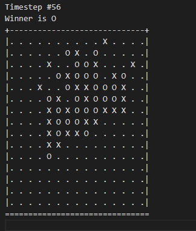
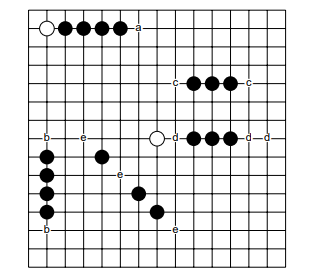
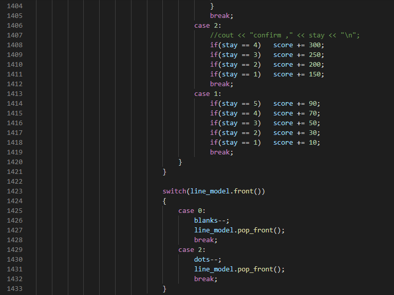

AI 五子棋
這個AI五子棋是我們要設計出自己的heuristic function去計算目前的棋局，並嘗試去下最好的一步來贏過對手，主要下棋的方式是透過掃描棋面後，透過minimax或alpha-beta pruning去 預測下棋的所有可能之中得分最高的一步，來藉此贏過對手。

minimax或alpha-beta pruning其實不難，就只是建一顆預測棋局用的樹去試看看所有可能後找出贏面最高的一步，要能夠贏過別人，關鍵在預測樹的深度和heuristic function的設計，越深的 alpha-beta pruning或minimax的深度代表能夠預測越多步，但也會消耗更高的時間和記憶體空間，由於記憶體空間和下棋時間均有限制，所以要透過多次嘗試來找出限制內的最深深度。但這往往 不是決定性的關鍵，因為其他對手們只要有同等級的硬體，他們也有機會能夠達到、甚至超越我們的搜尋深度，那什麼是關鍵? Heuristic Function!
在這個AI中，我採取了alpha-beta pruning來降低時間複雜度，而關鍵性的heuristic function我則是去研究了每一種五子棋中的棋型，從勝利的五顆，再到必勝棋局中的活四，或有其二及能獲勝的 死四和活三等等各種不同棋型，這種方式叫做TSS(Threat Space Search)，是1994年被L.V. Allis博士所研究出來的五子棋獲勝方式，從不同的棋型之中，活四和五顆提供了2個threat，而死四和活三 各提供了一個threat，每當湊齊2個threat即為獲勝，所以我們的目標就是要湊齊2個threat。而剩下的棋型又以連線越多顆，越多活棋能擺放的分數就越高。

實作過程就是read-in，建立指定深度的樹，透過alpha-beta pruning去搜尋，最終進入heuristic function。我採取對棋盤上每一直排，橫排，斜排去窮舉搜尋，在每一排之中透過strstr先達成O(n) 的threat pattern搜尋，剩下的又再從頭開始逐一檢查連接顆數和各個pattern的活棋數來決定這一排的分數，根據雙方分數去加減來得出棋局的分數。這樣的heuristic function的正確率在搜尋threat 上有一定的準確度，但是時間複雜度過於龐大，對15×15的棋盤來說，光一方要搜尋的數量就已經非常可觀，更何況要對敵我雙方去算分數來決定棋局分數，還要進入alpha-beta pruning的多層預測樹之中， 著實是一大負擔，也因為heuristic function的時間複雜度太過糟糕，導致搜尋深度只能設到2~3層，真的是爛掉了(X。
